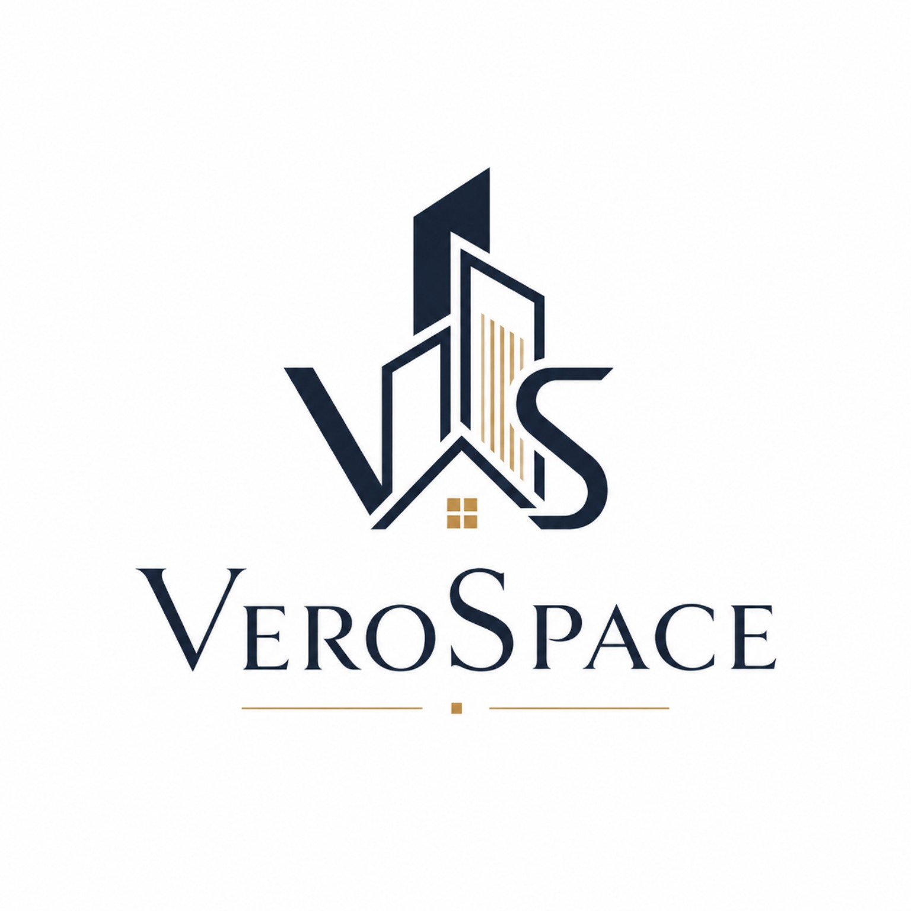
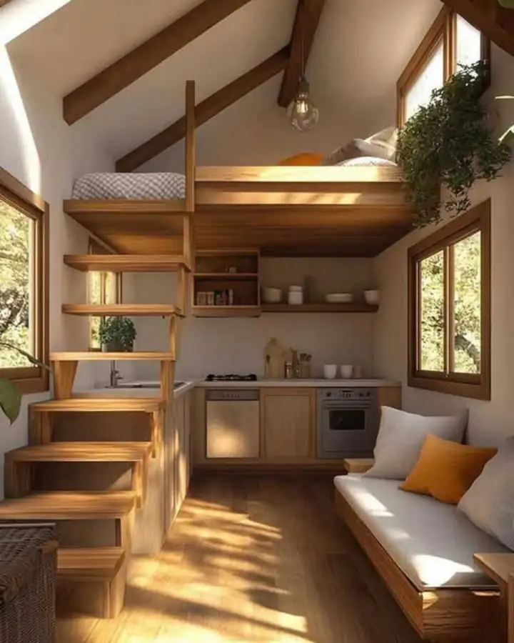

Scope first
What changes, what stays and what matters most are agreed before styling.

VeroSpace
Residential interiors · renovation · coordination
Layout, materials and renovation resolved as one design direction.
What you can expect
Trust comes from visible decisions—not invented claims.
What changes, what stays and what matters most are agreed before styling.
Key layout, material and budget decisions pause for your approval before moving forward.
New ideas are checked against scope, cost and timing instead of quietly drifting into the build.
Final notes, open questions and agreed follow-up items stay documented after the main work closes.
Project studies
Each study uses one coherent three-image photographic series. Swipe the card before opening it.


Use vertical space without making daily life feel compressed.


Make a small bathroom feel intentional rather than over-decorated.


Let architecture lead instead of competing with it.


Balance generous windows, heavy timber and everyday comfort.


Give dining a real place in a compact timber interior.
Photography above is used as licensed visual reference for VeroSpace concept studies; it is not presented as completed VeroSpace client work.
Service
The job is not just making a room look good. It is keeping decisions connected from first plan to handover.
Layout, materials, lighting, furniture and storage as one system.
Scope and priorities resolved before work starts changing the space.
Decision points are visible, reviewable and approved before the next stage.
Questions, changes and agreed follow-up items have a clear place instead of disappearing into chat history.
Client control
See the decision in context.
Confirm before the next stage.
Keep the agreed direction visible.
Process
Five stages. Each one closes a specific uncertainty.
Space, goals, budget and constraints.
Flow, zoning, storage and priorities.
Materials, light, furniture and details.
Critical choices are confirmed before build decisions move.
Final checks, documentation and agreed follow-up.
Ready when the problem is clear
Consultation
The space, what needs to change, budget range and timing. That is enough to begin.